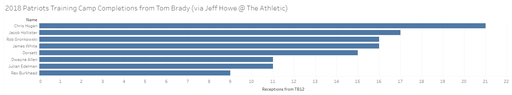

Projecting fantasy production week to week for Patriots skill players can be a maddening exercise. Bill Belichick and Co. are famous for drastically altering game plans week to week, for zigging when the rest of the league zags, and for punishing players who make mistakes. The good news is, there are a few options in the Pats receiving game we can count on this season to provide excellent value at their current draft cost..
Let's dive in.
We know Brady is a fantasy stud and we know Gronk is the best tight end in the league (real or fantasy) when he is on the field. The questions about 2018's team revolve around the WR and RB positions where the Pats are dealing with significant turnover.
2017 Departures
How will the 2018 Patriots replace Brandin Cooks, Deon Lewis, and Big Game Danny Amendola? Looking at the target distribution below, it's obvious The Pats will be missing significant offensive skill position production this year (from ESPN - min 15 targets).
| Name | Targets | Receptions | Yards | TD's |
|---|---|---|---|---|
| Brandin Cooks | 114 | 65 | 1082 | 7 |
| Rob Gronkowski | 106 | 69 | 1084 | 8 |
| Danny Amendola | 86 | 61 | 659 | 2 |
| James White | 72 | 56 | 429 | 3 |
| Chris Hogan | 59 | 34 | 439 | 5 |
| Rex Burkhead | 36 | 30 | 254 | 3 |
| Dion Lewis | 36 | 32 | 214 | 3 |
| Dwayne Allen | 22 | 10 | 86 | 1 |
| Phillip Dorsett | 18 | 12 | 194 | 0 |
Last season, Brandin, Danny, and Dion accounted for 40% of TB12's targets, 40% of his completions, and 44% of his touchdowns through the air. That's a lot of fantasy points.
So who benefits?
Obviously Gronk, if healthy, is going to maintain his heavy involvement in the Pats 2018 passing attack. He will cost you a late second or early third round pick (20.4 ESPN ADP) or around $34 in an auction draft. Gronk is entering his ninth NFL season and has not played 16 games since 2011. We all pray for Gronk's health daily and we know the Pats have become smarter about managing his reps for the playoff run. Any injury that could jeopardize Gronk's availability for the playoffs will keep him off the field, and in my opinion, the health risk is too high to draft Gronk at his current price.
Chris Hogan, Julian Edelman, James White. These are the Patriots pass catchers to target in your fantasy draft.
Chris Hogan - Hogan only played nine games last year. He played 16, 16, 16, and 15 games his previous four seasons, so while we may remember him being banged up constantly last year, he doesn't pose the same level of injury risk as Gronk, and doesn't cost nearly as much draft capital with an ADP of 60.7 (5th round) and an auction price of $7 on ESPN.
Brady trusts Hogan - He caught six of his eight targets for 128 yards and a touchdown in last year's Super Bowl and so far he has been dominating the preseason with five catches from Brady for 25 yards and a TD in their second preseason game. Hogan also has a team leading 21 completions from TB12 during team drills through 8/14 (see chart above...stats from Jeff Howe at The Athletic).
With Julian Edelman missing the first four games of the 2018 season, Hogan is going to be an absolute target monster early on and it would not surprise me if he was a top ten fantasy wideout with Edelman sidelined. I project Chris Hogan to have his first 1,000 yard season and to reach double digit touchdowns this year, making him a great value at his current ADP.
This brings us back to February 4th, 2018, and everything that’s surrounded the Patriots since they fell just short of a sixth Super Bowl title. Yes, the Patriots were unsuccessful in their bid to repeat as Super Bowl champions. Yes, there have been hints of internal conflict that hasn’t been heard in Foxborough since Bob Kraft bought the team in 1994. And yes, there’s a certain handsome Quarterback now playing in San Francisco instead of New England.
Julian Edelman - Jules, Jules, Jules...how we missed you last year. The four game suspension is a bummer, but I actually think it helps Edelman fully recover from his torn ACL. Obviously roster construction is going to dictate whether 11 games of Edelman (at most) will be worth it for you in your draft. I wouldn't pair him with suspended, injured, or otherwise potentially unavailable players like Mark Ingram, Josh Gordon, D'Onta Foreman, and Alshon Jeffrey, but if you can afford to stash him on your bench or in a reserve spot for those first few weeks, an eighth round pick or $4 of your $200 auction budget will be well worth it. In 2016, Edelman had a whopping 159 targets which was good for 98 grabs, 1106 yards, but only three TD's. The year before, Edelman had seven touchdowns in only nine games so positive TD regression is certainly a possibility. For relatively low cost, Edelman has a very high weekly floor (especially in PPR) and will be an every week starter for 11 weeks including the fantasy playoffs. He will be out of your lineup before bye weeks start, so you should have plenty of options to replace at least most of his production until week four.
I'm also encouraged by Edelman's preseason connection with Brady coming off the injury and missed season. So far, he's caught 11 passes in team drills and grabbed four balls for 26 yards against the Eagles on August 16th. Fantasy drafts are an exercise in recency bias, and you can grab a fantasy stud late in your draft because people will forget Jules is Jules. You're welcome.
James White - The hero of SB LI, White is one of Brady's favorite targets and with Dion Lewis busy in Tennessee standing next to Derrick Henry, I expect James White's target share to increase even more this year. Last year he caught 56 passes on 72 targets and the year before he caught 60 passes on 86 targets in a season where Dion Lewis only played seven games. I see his targets, receptions, yards, and TD's all increasing this year and for only a 10th/11th round pick or $1/$2 of auction budget, you are getting a solid fantasy starter with a high floor in PPR and decent TD upside. Don't forget, James White runs the ball on occasion too..
White has caught 16 passes from Brady in team drills at camp and had six grabs for 61 yards and a TD against the Eagles last week leading all receivers. His connection with Brady is for real and passing to RB's is a staple of a Brady/McDaniels offense.
What about Rex Burkhead? I love Rex Burkhead and if healthy I think he could be a fantasy asset with ample Red Zone opportunities, but he had multiple injuries last year and has already been held out of camp with a tear in his knee (yikes). While this sounds like an injury he can play through, it may limit him or lead to compensation injuries down the line. Burkhead has also never caught more than 30 passes in a season and while I certainly see his passing game numbers increasing this year (9 passes caught so far from Brady in camp), the health concerns and White's presence in the passing game make me think that a fifth round pick is a little too rich for Rex. I would rather take Hogan in the fifth or wait 5-6 rounds to grab James White.
What about Phillip Dorsett? Dorsett is an interesting dart throw and may have some value early in the season with Edelman on the self, but I don't see the consistency to warrant rostering him in a redraft league. There are too many zero's on his game logs and other than catching all three targets for 68 yards against the Saints in week three last year, Dorsett never topped forty yards or had more than three receptions in a game the rest of the way.
What about Sony Michel? Obviously when the Patriots take an RB in the first round of the NFL draft, the fantasy football world takes notice, but I don't see Sony making a major contribution this year. The early injury and missed reps during training camp certainly don't help, but even were he healthy, I think it takes RB's at least a year to earn Belichick's trust. When was the last time the Patriots invested significant draft capital on an RB (no offense to 2015 seventh rounder Joey Iosefa)? 2014 when they selected, you guessed it, James White out of Wisconsin in the fourth round. White received rave reviews and was consistently turning heads in training camp, but had trouble translating to games early on with limited opportunities. It's hard to believe considering the consistent producer he's become, but White only played in three games his rookie year and was routinely a healthy scratch. Belichick, McDaniels, and Brady expect a lot from their running backs and the learning curve is steep. Michel is certainly a dynasty asset but I will not be taking him in redraft leagues this year.
Go Pats!